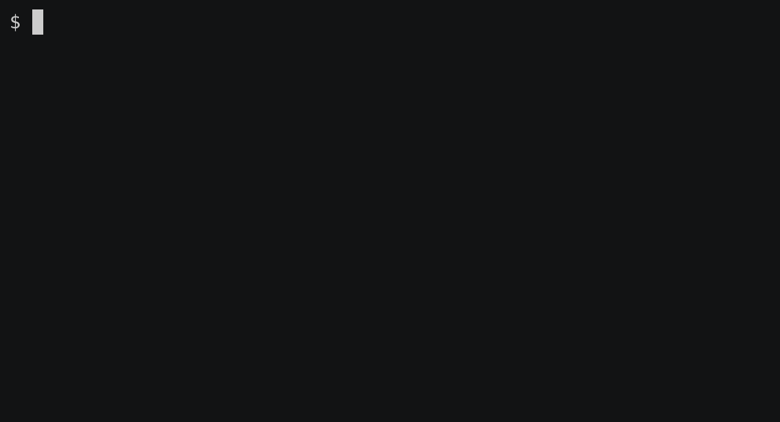

JLess is a command-line JSON viewer designed for reading, exploring, and searching through JSON data.
JLess will pretty print your JSON and apply syntax highlighting. Use it when exploring external APIs, or debugging request payloads.
Expand and collapse Objects and Arrays to grasp the high- and low-level structure of a JSON document. JLess has a large suite of vim-inspired commands that make exploring data a breeze.
JLess supports full text regular-expression based search. Quickly find the data you're looking for in long String values, or jump between values of the same Object key.
The latest JLess releases are available on GitHub. Jless currently supports macOS and Linux.
If you have a Rust toolchain installed, you can also install directly from source using cargo:
Check out the user guide to learn about the full functionality of JLess.